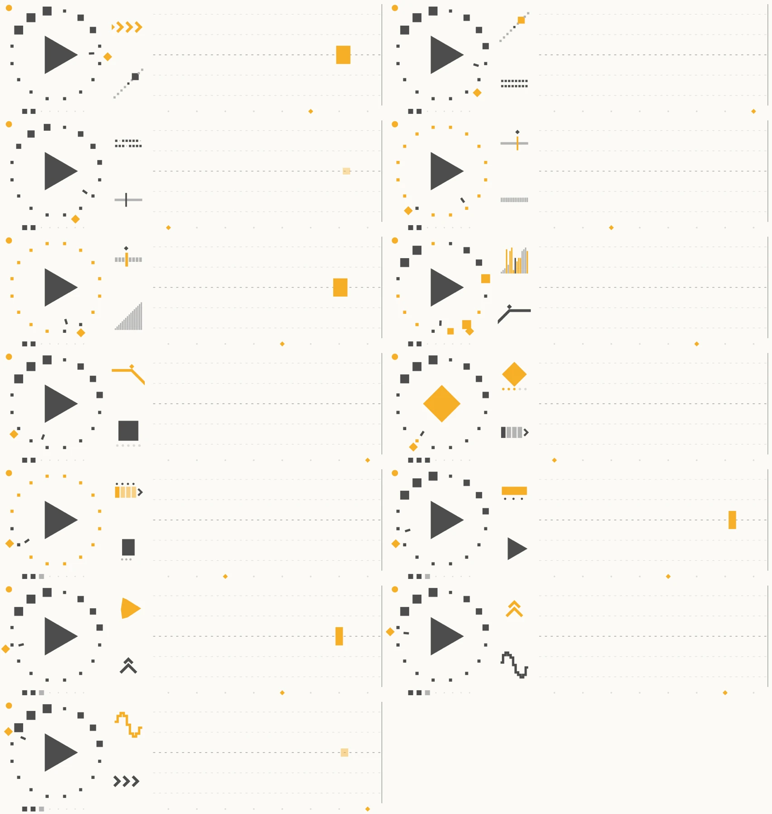
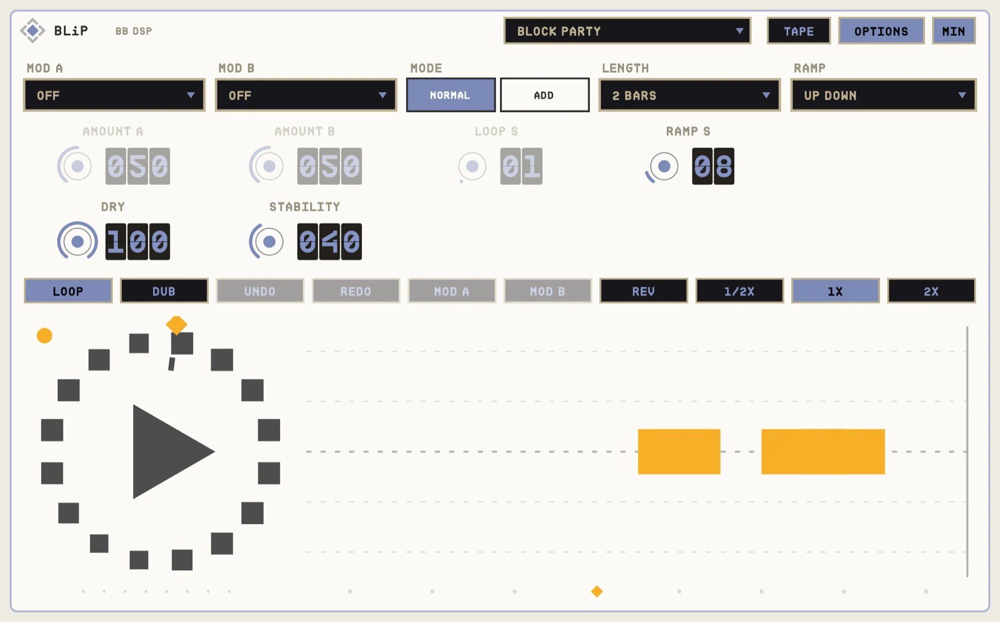

OVERVIEW
BLiP is first a glitch effect. Six algorithms (MOSAIC, BLOCKS, INTERRUPT, ARP, HAZE and PATTERN), each with four variations, slice and rearrange what you play, locked to the host's beat.
Behind it sits a looper that is always listening. Switch LOOP on and it catches the bars you just played. Two modifier slots then bend the loop (or the live signal) with speed, trims, scrambles, stutters and more, and eight undo layers keep your overdubs safe.


QUICK START
- 01Insert BLiP and pick an ALGORITHM and VARIATION.
- 02Turn up ACTIVITY and MIX to hear the glitches.
- 03Switch LOOP on to catch what you just played; DUB to layer over it.
- 04Pick modifiers in MOD A / MOD B and press their ON buttons.
HOW IT WORKS
Always listening
There is no record button. With LENGTH in bars and the host playing, pressing LOOP just after a bar line catches the bars that just ended; later in a bar it waits for the next line.
SOURCE
Choose whether the glitch and the modifiers work on the LIVE input, the LOOP, or BOTH.
Click-free edges
Loop seams, punches, undos and slice jumps all fade, so edits stay clean.
CONTROLS
Values in the dark wells are the defaults.
GLITCH
LOOP
MODIFIERS A / B
OPTIONS
TIPS
- PATTERN with high REPEATS on drums gives sequenced stutters.
- Put the pitcher on A and the stutter on B, SOURCE LIVE, for glitched leads with no loop at all.
SPECS
- TYPE
- Audio effect (AU aufx), VST3, Standalone
- LOOP
- Up to 120 s, 8 undo layers
- OUTPUT
- Stereo